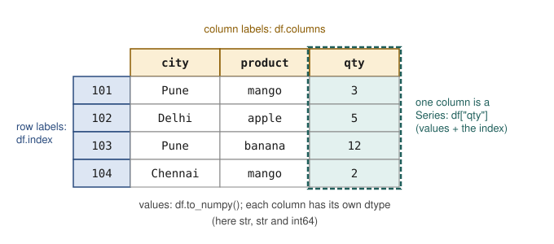

Chapter 4: pandas Fundamentals: Series, DataFrames and Selection¶
Loading a table, looking at it, and picking out the rows and columns you need
Learning outcomes
After this chapter you should be able to:
- describe a pandas Series and DataFrame in terms of values, index and columns;
- create DataFrames from dictionaries and lists, and load them from CSV text with
read_csv; - inspect a new table with
head,info,describe,dtypesandvalue_counts; - select columns, and select rows by label (
loc), by position (iloc) and by condition; - sort, rank and take the largest or smallest rows;
- add, transform, rename and drop columns;
- set and reset the index and explain index alignment;
- modify a table safely under pandas' copy-on-write rules, and save it back to CSV.
NumPy arrays are grids of numbers without names. Real data has names: columns called city and price, rows that are orders or patients, values that are text, dates and numbers in the same table. pandas adds exactly this. Its two objects, the Series (one labelled column) and the DataFrame (a table of labelled columns), are where most data science in Python happens. This chapter covers creating, loading, inspecting and selecting; Chapter 5 covers cleaning, reshaping, grouping and joining.
import numpy as np
import pandas as pd
print(pd.__version__)
3.0.5
The outputs in this book come from pandas 3. Two changes in version 3 are visible in this chapter: text columns get a dedicated string type, shown as str, instead of the general object type of earlier versions; and the copy-on-write rules of Section 4.9 apply always. Code written for pandas 2 mostly runs unchanged.
4.1 The Series¶
A Series is a one-dimensional array of values together with an index, a label for each value. By default the labels are 0, 1, 2, ..., but they can be anything.
cups = pd.Series([112, 98, 105, 120, 131], index=["Mon", "Tue", "Wed", "Thu", "Fri"], name="cups")
print(cups)
print(cups["Wed"], cups.iloc[0])
print(cups.values)
print(cups.index)
Mon 112
Tue 98
Wed 105
Thu 120
Fri 131
Name: cups, dtype: int64
105 112
[112 98 105 120 131]
Index(['Mon', 'Tue', 'Wed', 'Thu', 'Fri'], dtype='str')
A Series behaves like a NumPy array (vectorised arithmetic, boolean masks, aggregations) and like a dictionary (lookup by label):
print(cups.mean(), cups.max(), cups.idxmax())
print(cups[cups > 110])
print((cups * 12.5).round(1))
113.2 131 Fri
Mon 112
Thu 120
Fri 131
Name: cups, dtype: int64
Mon 1400.0
Tue 1225.0
Wed 1312.5
Thu 1500.0
Fri 1637.5
Name: cups, dtype: float64
idxmax returns the label of the largest value, where NumPy's argmax would return its position.
Alignment by label¶
When two Series are combined, pandas matches values by label, not by position. A label present in only one of them gives a missing result.
week1 = pd.Series({"tea": 40, "coffee": 25, "juice": 10})
week2 = pd.Series({"coffee": 30, "tea": 45, "milk": 8})
print(week1 + week2)
print(week1.add(week2, fill_value=0))
coffee 55.0
juice NaN
milk NaN
tea 85.0
dtype: float64
coffee 55.0
juice 10.0
milk 8.0
tea 85.0
dtype: float64
Alignment is one of pandas' most useful features, because it prevents silently adding the wrong numbers together when two series are in different orders. It is also a source of surprise: the NaN for juice and milk appears because each is missing from one week. The add method with fill_value=0 treats a missing label as zero, which is right here (no milk was sold in week 1).
Counting values¶
For a categorical Series, value_counts counts each distinct value, most common first. With normalize=True it gives proportions.
orders = pd.Series(["tea", "coffee", "tea", "tea", "juice", "coffee", "tea"])
print(orders.value_counts())
print(orders.value_counts(normalize=True).round(3))
print(orders.nunique(), orders.unique().tolist())
tea 4
coffee 2
juice 1
Name: count, dtype: int64
tea 0.571
coffee 0.286
juice 0.143
Name: proportion, dtype: float64
3 ['tea', 'coffee', 'juice']
4.2 The DataFrame¶
A DataFrame is a table: a set of Series that share one index, one Series per column. Figure 4.1 names the parts.

The most common way to build a small DataFrame by hand is from a dictionary that maps column names to lists of values:
df = pd.DataFrame({
"city": ["Pune", "Delhi", "Pune", "Chennai"],
"product": ["mango", "apple", "banana", "mango"],
"qty": [3, 5, 12, 2],
}, index=[101, 102, 103, 104])
print(df)
print(df.shape)
print(df.columns.tolist(), df.index.tolist())
print(df.dtypes)
city product qty
101 Pune mango 3
102 Delhi apple 5
103 Pune banana 12
104 Chennai mango 2
(4, 3)
['city', 'product', 'qty'] [101, 102, 103, 104]
city str
product str
qty int64
dtype: object
Each column has its own dtype: int64 for the quantities, str for the text. A DataFrame can also be built from a list of rows (with columns= naming them), from a list of dictionaries (one per row), or from a two-dimensional NumPy array.
rows = [{"city": "Pune", "qty": 3}, {"city": "Delhi", "qty": 5, "note": "urgent"}]
print(pd.DataFrame(rows))
city qty note
0 Pune 3 NaN
1 Delhi 5 urgent
Keys missing from a row become NaN, so a list of dictionaries is a convenient way to collect records whose fields vary.
4.3 Loading data¶
pandas reads many formats: read_csv for comma-separated (and other delimited) text, read_excel for spreadsheets, read_json for JSON, read_parquet for the Parquet format used by large data systems, and read_sql for the result of a database query. They all return a DataFrame. CSV is by far the most common, and read_csv has options for nearly every variation.
This book keeps its data inside the code, so the examples run anywhere. A CSV file's contents are written as a string and wrapped in io.StringIO, which read_csv accepts exactly as if it were a file name. With a real file you would write pd.read_csv("orders.csv") instead.
Here is the table of orders from a small fruit shop that the rest of the chapter uses:
import io
csv_text = """order_id,date,customer,city,product,qty,unit_price
1001,2024-03-01,C01,Pune,mango,3,120.0
1002,2024-03-01,C02,Delhi,apple,5,80.0
1003,2024-03-02,C03,Pune,banana,12,6.0
1004,2024-03-02,C01,Pune,apple,2,82.0
1005,2024-03-03,C04,Chennai,mango,4,115.0
1006,2024-03-03,C05,Delhi,banana,24,5.5
1007,2024-03-04,C02,Delhi,mango,1,125.0
1008,2024-03-04,C06,Chennai,apple,6,78.0
1009,2024-03-05,C03,Pune,mango,2,120.0
1010,2024-03-05,C07,Delhi,grapes,3,90.0
1011,2024-03-06,C04,Chennai,banana,18,6.0
1012,2024-03-06,C01,Pune,grapes,2,95.0
"""
orders = pd.read_csv(io.StringIO(csv_text), parse_dates=["date"])
print(orders.head())
order_id date customer city product qty unit_price
0 1001 2024-03-01 C01 Pune mango 3 120.0
1 1002 2024-03-01 C02 Delhi apple 5 80.0
2 1003 2024-03-02 C03 Pune banana 12 6.0
3 1004 2024-03-02 C01 Pune apple 2 82.0
4 1005 2024-03-03 C04 Chennai mango 4 115.0
parse_dates=["date"] asks pandas to turn the text dates into real dates (dtype datetime64), so that they can be compared, sorted and grouped by month or weekday. Without it the dates would stay as strings.
Some other options of read_csv you will need sooner or later:
| Option | Example | Use |
|---|---|---|
sep |
sep=";" |
a separator other than the comma ("\t" for tabs) |
header |
header=None |
the file has no header line |
names |
names=["a", "b"] |
give the column names yourself |
index_col |
index_col="order_id" |
use a column as the index |
usecols |
usecols=["date", "qty"] |
read only some columns |
dtype |
dtype={"customer": "category"} |
force the type of a column |
na_values |
na_values=["-", "NA", "?"] |
extra strings that mean "missing" |
parse_dates |
parse_dates=["date"] |
read columns as dates |
nrows |
nrows=1000 |
read only the first rows of a huge file |
encoding |
encoding="latin-1" |
text not in UTF-8 |
Table 4.1. Commonly used options of read_csv.
4.4 Inspecting a new table¶
The first thing to do with any new table is to look at it. A handful of methods give a quick but complete first impression.
print(orders.shape)
orders.info()
(12, 7)
<class 'pandas.DataFrame'>
RangeIndex: 12 entries, 0 to 11
Data columns (total 7 columns):
# Column Non-Null Count Dtype
--- ------ -------------- -----
0 order_id 12 non-null int64
1 date 12 non-null datetime64[us]
2 customer 12 non-null str
3 city 12 non-null str
4 product 12 non-null str
5 qty 12 non-null int64
6 unit_price 12 non-null float64
dtypes: datetime64[us](1), float64(1), int64(2), str(3)
memory usage: 966.0 bytes
info lists every column with its count of non-missing values and its dtype, and the memory used. It answers three questions at once: how big is the table, are there missing values (a non-null count below the number of rows), and did each column get the type it should have (a numeric column read as str means something in it is not a number).
describe summarises the numeric columns:
print(orders[["qty", "unit_price"]].describe().round(2))
qty unit_price
count 12.00 12.00
mean 6.83 76.88
std 7.33 45.89
min 1.00 5.50
25% 2.00 60.00
50% 3.50 86.00
75% 7.50 116.25
max 24.00 125.00
count is the number of non-missing values, std the standard deviation (with the \(n - 1\) divisor), and 25%, 50%, 75% the quartiles: a quarter of the values lie below the 25% point, half below the median (50%). Here the quantity's median (3.5) is much smaller than its mean (6.83), because a few large banana orders pull the mean up. Chapter 6 makes these summaries visual.
For text columns, counts are more informative:
print(orders["city"].value_counts())
print(orders["product"].nunique(), "products")
print(orders["date"].min(), "to", orders["date"].max())
city
Pune 5
Delhi 4
Chennai 3
Name: count, dtype: int64
4 products
2024-03-01 00:00:00 to 2024-03-06 00:00:00
Key idea
Never analyse a table you have not looked at. shape, head, info, describe and value_counts take a minute and catch most of the problems (wrong types, missing values, impossible numbers, unexpected categories) that would otherwise corrupt everything that follows.
4.5 Selecting columns and rows¶
Columns¶
Square brackets with a column name give that column as a Series; with a list of names they give a smaller DataFrame.
print(orders["qty"].head(3))
print(orders[["city", "qty"]].head(3))
0 3
1 5
2 12
Name: qty, dtype: int64
city qty
0 Pune 3
1 Delhi 5
2 Pune 12
Note the double brackets in the second line: the outer pair is the selection, the inner pair makes a list. A column can also be read as an attribute, orders.qty, which is handy in interactive work but fails for names with spaces or names that clash with DataFrame methods (a column called count, for example), so this book uses brackets.
Rows by label: loc¶
loc selects by label: df.loc[rows, columns], where each part can be a single label, a list of labels, a slice of labels or a boolean mask. Unlike positional slices, label slices include the end label.
o = orders.set_index("order_id")
print(o.loc[1003]) # one row, as a Series
print(o.loc[1003:1005, ["city", "qty"]]) # 1005 is included
date 2024-03-02 00:00:00
customer C03
city Pune
product banana
qty 12
unit_price 6.0
Name: 1003, dtype: object
city qty
order_id
1003 Pune 12
1004 Pune 2
1005 Chennai 4
Rows by position: iloc¶
iloc selects by position, like NumPy, with the end of a slice excluded.
print(orders.iloc[0, 3]) # first row, fourth column
print(orders.iloc[-2:, :3]) # last two rows, first three columns
Pune
order_id date customer
10 1011 2024-03-06 C04
11 1012 2024-03-06 C01
Caution: loc slices include the end, iloc slices do not
o.loc[1003:1005] gives three rows (1003, 1004, 1005); orders.iloc[2:5] gives three rows (positions 2, 3, 4). Labels are not counted, so "one before the end" has no meaning for them; that is why loc includes the end label.
Rows by condition¶
Boolean masks work as in NumPy. A condition on a column gives a Series of booleans; indexing the DataFrame with it keeps the rows where it is True.
big = orders[orders["qty"] >= 10]
print(big[["order_id", "product", "qty"]])
pune_mango = orders[(orders["city"] == "Pune") & (orders["product"] == "mango")]
print(pune_mango[["order_id", "qty", "unit_price"]])
order_id product qty
2 1003 banana 12
5 1006 banana 24
10 1011 banana 18
order_id qty unit_price
0 1001 3 120.0
8 1009 2 120.0
Two helpers make common conditions shorter: isin tests membership in a list, and between tests a range (both ends included).
fruit = orders[orders["product"].isin(["apple", "grapes"])]
print(fruit["order_id"].tolist())
early = orders[orders["date"].between("2024-03-02", "2024-03-03")]
print(early["order_id"].tolist())
[1002, 1004, 1008, 1010, 1012]
[1003, 1004, 1005, 1006]
To select rows by condition and choose columns, put the mask in loc:
print(orders.loc[orders["city"] == "Delhi", ["date", "product", "qty"]])
date product qty
1 2024-03-01 apple 5
5 2024-03-03 banana 24
6 2024-03-04 mango 1
9 2024-03-05 grapes 3
The query method takes the condition as a string, which some people find easier to read: orders.query("city == 'Delhi' and qty > 2").
4.6 Sorting and ranking¶
sort_values sorts by one or more columns; ascending=False reverses the order. nlargest and nsmallest take the top or bottom rows directly.
orders["amount"] = orders["qty"] * orders["unit_price"]
print(orders.sort_values("amount", ascending=False).head(3)[["order_id", "product", "amount"]])
print(orders.sort_values(["city", "amount"], ascending=[True, False])[["city", "order_id", "amount"]].head(5))
print(orders.nsmallest(2, "amount")[["order_id", "amount"]])
order_id product amount
7 1008 apple 468.0
4 1005 mango 460.0
1 1002 apple 400.0
city order_id amount
7 Chennai 1008 468.0
4 Chennai 1005 460.0
10 Chennai 1011 108.0
1 Delhi 1002 400.0
9 Delhi 1010 270.0
order_id amount
2 1003 72.0
10 1011 108.0
The first line also created a new column, amount, by multiplying two existing ones; Section 4.7 says more. Sorting by ["city", "amount"] sorts by city first and, within each city, by amount.
4.7 Adding and changing columns¶
Assigning to a new column name adds a column. The right-hand side can be a single value (used for every row), a Series (aligned by index), or an array of the right length.
orders["discount"] = 0.0
orders["weekday"] = orders["date"].dt.day_name()
orders["bulk"] = np.where(orders["qty"] >= 10, "bulk", "regular")
print(orders[["order_id", "date", "weekday", "qty", "bulk"]].head(4))
order_id date weekday qty bulk
0 1001 2024-03-01 Friday 3 regular
1 1002 2024-03-01 Friday 5 regular
2 1003 2024-03-02 Saturday 12 bulk
3 1004 2024-03-02 Saturday 2 regular
orders["date"].dt gives access to the parts of a date (year, month, day, day_name(), and so on); .str does the same for string methods (Chapter 5). np.where from Section 3.4 works on columns too.
map translates the values of a column through a dictionary, which is how codes become names:
region = {"Pune": "West", "Delhi": "North", "Chennai": "South"}
orders["region"] = orders["city"].map(region)
print(orders[["city", "region"]].drop_duplicates())
city region
0 Pune West
1 Delhi North
4 Chennai South
A value not found in the dictionary would become NaN, which is a useful warning that the mapping is incomplete.
assign adds columns and returns a new DataFrame, leaving the original alone. It suits a chain of steps written one under the other:
summary = (orders
.assign(amount_k=lambda d: d["amount"] / 1000)
.loc[lambda d: d["amount"] > 300, ["order_id", "amount", "amount_k"]])
print(summary)
order_id amount amount_k
0 1001 360.0 0.360
1 1002 400.0 0.400
4 1005 460.0 0.460
7 1008 468.0 0.468
The lambda d: receives the DataFrame at that point in the chain, so later steps can use columns created by earlier ones.
Renaming and dropping are equally direct:
tidy = orders.drop(columns=["discount", "bulk"]).rename(columns={"unit_price": "price"})
print(tidy.columns.tolist())
['order_id', 'date', 'customer', 'city', 'product', 'qty', 'price', 'amount', 'weekday', 'region']
4.8 The index¶
The index labels the rows. A fresh table gets 0, 1, 2, ... (a RangeIndex), but a column of unique identifiers often makes a better index: lookups by loc then use the identifier, and alignment matches rows by it.
by_id = orders.set_index("order_id")
print(by_id.loc[[1001, 1007], ["product", "amount"]])
back = by_id.reset_index() # the index becomes a column again
print(back.columns[:3].tolist())
product amount
order_id
1001 mango 360.0
1007 mango 125.0
['order_id', 'date', 'customer']
Alignment by index applies to DataFrames as to Series. If you assign a Series as a column, it is matched to the rows by label, not by position, which is safe when the labels mean the same thing and confusing when they do not. After filtering or sorting, the index keeps the old labels, so a filtered table may have labels 2, 5, 10; reset_index(drop=True) renumbers it from 0 when the old labels are not wanted.
4.9 Modifying data safely: copy-on-write¶
Selecting part of a table and then changing it raises the question of whether the original changes too. In pandas 3 the answer is simple and always the same: no. Every selection behaves like a new, independent object (pandas avoids actually copying the data until one of them is modified, hence the name copy-on-write).
delhi = orders[orders["city"] == "Delhi"]
delhi["qty"] = 0 # changes delhi only
print(delhi["qty"].tolist())
print(orders.loc[orders["city"] == "Delhi", "qty"].tolist()) # unchanged
[0, 0, 0, 0]
[5, 24, 1, 3]
To change the original table, select and assign in one step with loc:
orders.loc[orders["order_id"] == 1010, "unit_price"] = 92.0
print(orders.loc[orders["order_id"] == 1010, ["product", "unit_price"]])
product unit_price
9 grapes 92.0
The pattern to avoid is chained assignment, which selects twice and then assigns:
orders[orders["city"] == "Delhi"]["qty"] = 0 # does nothing to orders
The first selection produces a new object, the second selects from that, and the assignment changes only a temporary result that is immediately thrown away. pandas 3 warns about this with a ChainedAssignmentError message, and the fix is always orders.loc[mask, "qty"] = 0.
Caution: older advice about SettingWithCopyWarning
Before version 3, pandas sometimes changed the original and sometimes did not, and warned with SettingWithCopyWarning. Much advice on the web is about that warning. With copy-on-write it is gone: a selection never changes its parent, and df.loc[rows, cols] = value is the one way to change a table in place.
4.10 Saving a table¶
to_csv writes a DataFrame as CSV text, to a file if given a file name, or as a string if not. index=False leaves out the index when it is just 0, 1, 2, ....
out = orders[["order_id", "city", "amount"]].head(3).to_csv(index=False)
print(out)
order_id,city,amount
1001,Pune,360.0
1002,Delhi,400.0
1003,Pune,72.0
The matching writers to_excel, to_json and to_parquet exist for the other formats. Save cleaned data under a new name and keep the raw file unchanged, so that every step can be repeated from the original (Chapter 13).
4.11 Worked example: a first report on the orders¶
The shop owner asks three questions: How much did each city spend? What is the most popular product by quantity? What share of revenue came from bulk orders? Each answer is a short combination of this chapter's tools (the grouping in the first is previewed here and explained fully in Chapter 5).
orders["amount"] = orders["qty"] * orders["unit_price"] # recompute after the price correction
print("Revenue by city:")
print(orders.groupby("city")["amount"].sum().sort_values(ascending=False))
qty_by_product = orders.groupby("product")["qty"].sum()
print("Most popular by quantity:", qty_by_product.idxmax(), qty_by_product.max())
bulk_share = orders.loc[orders["bulk"] == "bulk", "amount"].sum() / orders["amount"].sum()
print(f"Share of revenue from bulk orders: {bulk_share:.1%}")
Revenue by city:
city
Chennai 1036.0
Pune 1026.0
Delhi 933.0
Name: amount, dtype: float64
Most popular by quantity: banana 54
Share of revenue from bulk orders: 10.4%
The answers deserve a comment, which is the communication step of the workflow: bananas lead by quantity because they are bought by the dozen, but bulk orders (all of them bananas) bring in only a small share of revenue, which comes mainly from mangoes and apples. "Most popular" depends on whether it is measured by quantity, by number of orders or by revenue, and a report should say which.
4.12 Summary¶
Summary
- A Series is values plus an index; a DataFrame is a set of Series sharing one index, one per column, each with its own dtype.
- Build small DataFrames from dictionaries of lists; load real ones with
read_csvand its options (parse_dates,na_values,dtype, ...). - Inspect every new table with
shape,head,info,describeandvalue_counts. df["col"]gives a Series,df[["a", "b"]]a DataFrame.locselects by label (slices include the end);ilocby position (slices exclude the end); boolean masks select by condition.- Sort with
sort_values; take top rows withnlargest. - Add columns by assignment,
np.where,mapandassign; remove and rename withdropandrename. - Operations align by index labels.
- Under copy-on-write a selection never changes its parent; change a table with
df.loc[mask, col] = value, never by chained assignment.
4.13 Exercises¶
Exercise 1
Using orders, select the rows for Chennai with an amount above 400, showing only order_id, product and amount.
Answer
print(orders.loc[(orders["city"] == "Chennai") & (orders["amount"] > 400), ["order_id", "product", "amount"]])
order_id product amount
4 1005 mango 460.0
7 1008 apple 468.0
Exercise 2
How many rows does o.loc[1002:1004] return, and how many does orders.iloc[1:4] return? Which orders are they?
Answer
Both return three rows: orders 1002, 1003 and 1004. loc includes the end label 1004; iloc takes positions 1, 2 and 3, which hold the same orders.
Exercise 3
Add a column price_band that is "high" when unit_price is at least 100, "mid" when it is at least 50, and "low" otherwise. Count the orders in each band.
Answer
orders["price_band"] = np.select(
[orders["unit_price"] >= 100, orders["unit_price"] >= 50],
["high", "mid"], default="low")
print(orders["price_band"].value_counts())
price_band
mid 5
high 4
low 3
Name: count, dtype: int64
np.select takes a list of conditions and a list of choices, and uses the first condition that holds; it generalises np.where to more than two outcomes. (pd.cut, in Chapter 5, is another way.)
Exercise 4
Two Series are a = pd.Series({"x": 1, "y": 2}) and b = pd.Series({"y": 10, "z": 20}). What is a + b? What is a.add(b, fill_value=0)?
Answer
a + b aligns by label: x is NaN (missing from b), y is 12, z is NaN (missing from a). With fill_value=0 the missing side counts as 0: x 1.0, y 12.0, z 20.0.
Exercise 5
A colleague writes orders[orders["product"] == "grapes"]["unit_price"] = 100 and is puzzled that nothing changes. Explain and correct it.
Answer
It is chained assignment: the first selection returns a new object, and the assignment changes only that temporary object. Under copy-on-write it never affects orders. The correct form is orders.loc[orders["product"] == "grapes", "unit_price"] = 100.
Exercise 6
describe shows that a column of ages has a minimum of -1 and a maximum of 199. What would you do next?
Answer
Treat both as suspect values, not facts. Count how many rows have impossible ages, look at them, and find out what they mean: -1 and 199 are often codes for "unknown". Then replace them with missing values (Chapter 5) before computing anything with the column, and record the decision.
4.14 Quiz¶
Check your understanding of Chapter 4
Exercise 1
What does df[["city"]] return?
- a Series
- a DataFrame with one column
- a list
- a NumPy array
Answer
a DataFrame with one column
Exercise 2
Which selector includes the end of a slice?
- loc
- iloc
- both
- neither
Answer
loc
Exercise 3
Which method shows each column's dtype and number of non-missing values?
- describe
- head
- info
- value_counts
Answer
info
Exercise 4
When two Series are added, values are matched by
- position
- index label
- value
- column name
Answer
index label
Exercise 5
Which is the correct way to change the original table?
- df[df.x > 0]['y'] = 1
- df.loc[df.x > 0, 'y'] = 1
- df.y[df.x > 0] = 1
- df[df.x > 0].y = 1
Answer
df.loc[df.x > 0, 'y'] = 1
Exercise 6
Which read_csv option turns text columns into dates?
Answer
parse_dates
Exercise 7
What does orders["product"].value_counts() return?
- the distinct products only
- the number of distinct products
- each product with how often it appears
- the products sorted alphabetically
Answer
each product with how often it appears